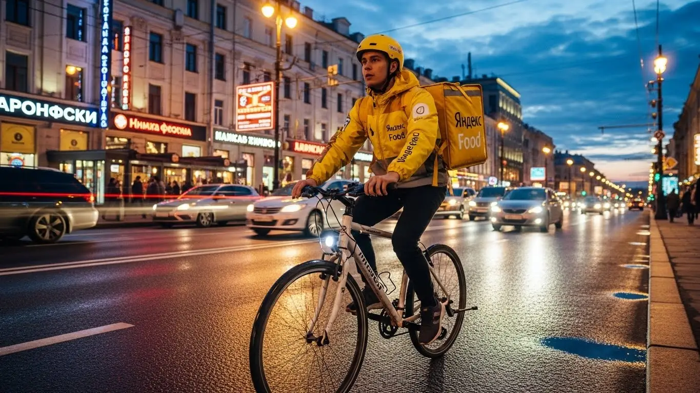
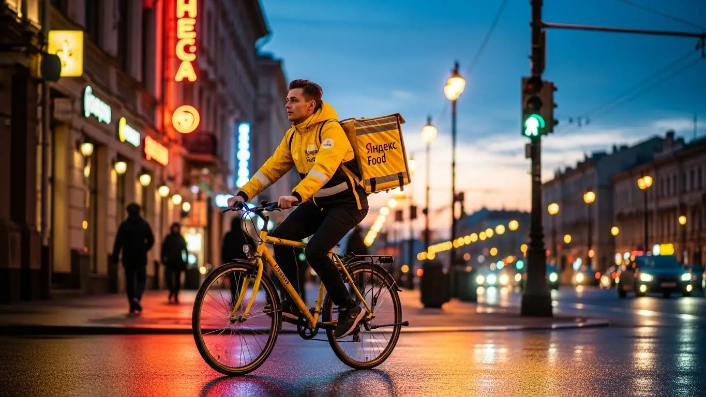
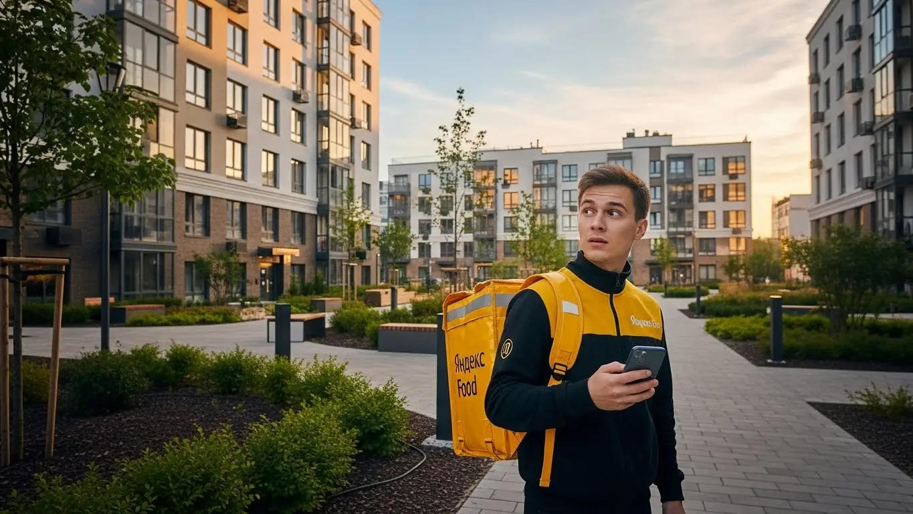

Сколько зарабатывает курьер Яндекс Еды в Новомосковске в 2025-2026

- Работа курьером Яндекс Еды в Новомосковске: для кого эта вакансия и что вы получите
- Сколько вы будете зарабатывать курьером в Новомосковске: калькулятор дохода и разбор выплат
- Реальный заработок курьера в Новомосковске: смены и месячный доход
- График работы и форматы занятости
- Требования к кандидату и документы
- Самозанятость, налоги и юридическая чистота
- Пошаговое оформление и первый выход на линию в Новомосковске
- Пешком, на вело или на авто: что выгоднее в Новомосковске
- Районы, маршруты и «топовые» зоны заказов в Новомосковске
- Безопасность, страховка, штрафы и оплата простоя
- Плюсы и возможные минусы работы курьером в Новомосковске
- Реальные истории и отзывы курьеров из Новомосковска
- Ответы на главные вопросы о работе курьером Яндекс Еды в Новомосковске
- Короткие ответы на главные вопросы
- Итоги и ваш следующий шаг
Все города
Здорово, будущий коллега. Тоже присматриваешься к жёлтой сумке и думаешь, что работа курьером Яндекс Еда в Новомосковске — это лёгкие деньги? Сразу скажу: не всё так просто. Многие видят только рекламу про «доход до 100 тысяч», но боятся другого: убить свою машину на наших дорогах, стоять в пробках в центре в час пик или понять, что после вычета бензина и налогов заработок стремится к нулю. Я здесь, чтобы рассказать, как оно на самом деле, без прикрас и обещаний золотых гор.
Поверь, нет ничего хуже, чем сдуться в первый же месяц, потому что реальность не совпала с ожиданиями. Заработок курьера в Новомосковске — это не просто цена заказа в приложении. Это минус расходы на транспорт, минус налог самозанятого, плюс или минус твой рейтинг в системе, который напрямую влияет на количество заказов. Большинство новичков у нас в городе наступают на одни и те же грабли: катаются по невыгодным районам с частным сектором, берут неудобные заказы и не понимают, почему в конце недели в приложении одна цифра, а на руках — совсем другая.
В этом гиде мы по косточкам разберём всё, что касается работы курьером Яндекс Еды именно в Новомосковске. Мы честно посчитаем, сколько реально можно положить в карман пешком, на велосипеде и на авто. Я покажу на примерах, в каких районах самый «жирный» спрос, а куда лучше не соваться в плохую погоду. Расскажу, за что на самом деле прилетают штрафы и как их избежать, и стоит ли вообще связываться с Яндексом, когда в городе есть и другие варианты подработки.
Меня зовут Алексей. Я сам откатал не одну тысячу километров с коробом за спиной по этому городу, а сейчас у меня свой небольшой таксопарк-партнёр. Я знаю всю эту кухню изнутри — и со стороны курьера, и со стороны партнёра, который подключает ребят к системе. Так что присаживайся поудобнее, сейчас всё разложу по полочкам, как для своего. Если же вы ищете краткую сводку условий и хотите сразу подать заявку, вся информация собрана на странице работа курьером Яндекс Еда в Новомосковске.
Но сначала — короткий гид по главным темам статьи, чтобы ты сразу нашёл то, что волнует больше всего.
Что ты точно узнаешь из этого разбора
В этой статье ты ТОЧНО узнаешь:
- Сколько реально можно заработать в Новомосковске за смену и за месяц, если работать пешком, на вело или авто?
- В каких районах Новомосковска (Залесный, Центр, Урванский) больше всего заказов и как ловить пиковые часы с высокими коэффициентами?
- Что выгоднее в Новомосковске — быть пешим, вело- или автокурьером, и какие у каждого формата есть подводные камни?
- Как работает оплата простоя и почему она защищает твой доход, даже если заказов мало?
- За что на самом деле могут оштрафовать или заблокировать в Яндекс Про и как этого избежать?
- Как за один день оформиться самозанятым, получить сумку и выйти на первый заказ в Новомосковске?
А если тебе некогда читать всю статью — переходи сразу к заключению, где ты найдёшь короткие ответы на все эти вопросы и указания, в каких разделах искать подробности.
А вот ключевые цифры и факты о работе в Новомосковске в одной картинке.
Работа курьером в Новомосковске: ключевые цифры
Доход в час
350–500 ₽
В часы высокого спроса и с учетом бонусов
Заработок за смену
2800–4000 ₽
Средний доход за активный 8-часовой слот
Чаевые от клиентов
+10-15%
Дополнительный доход, который полностью ваш
График работы
Свободный
Выбирайте слоты от 2 до 12 часов в удобное время
Работа курьером Яндекс Еды в Новомосковске: для кого эта вакансия и что вы получите
Кому подойдёт эта работа в Новомосковске
Давай начистоту: работа курьером — это не для всех, но для многих это отличный вариант. В Новомосковске я вижу несколько основных категорий ребят, которым такая занятость подходит идеально. Во-первых, это студенты, например, из нашего политехнического колледжа или филиала РХТУ. График можно подстроить под учёбу, выходить на пару часов после пар и иметь свои деньги на карманные расходы, не прося у родителей.
Во-вторых, это люди, которым нужна подработка к основной зарплате. Работаешь ты на заводе в смену или в офисе с девяти до шести — вечером или в выходные всегда можно взять несколько заказов и закрыть кредит или отложить на отпуск.
Также это хороший старт для тех, у кого пока нет опыта работы. Условия здесь простые: не требуют диплом и резюме на три страницы, главное — быть ответственным и шустрым. Ну и, конечно, это вакансия для водителей на своих авто, которые хотят, чтобы машина не простаивала, а приносила доход. Если тебе важны быстрые деньги и ты не хочешь зависеть от строгого начальника — это твой вариант.
Главные преимущества для жителей районов Залесный, Урванский, Центральный
Одно из главных удобств в Новомосковске — возможность работать прямо у себя под боком. Тебе не нужно тратить час на дорогу до «офиса», как это бывает в больших городах. Живёшь, к примеру, в Залесном микрорайоне — можешь выбрать эту зону в приложении и доставлять заказы из местных кафе и магазинов по соседним улицам. То же самое касается и Урванского микрорайона: там хватает и жилых домов, и точек общепита.
Это огромное преимущество. Ты экономишь не только время, но и деньги на проезд. Вышел из дома, включил приложение «Яндекс Про», и вот ты уже на смене. Особенно это ценно для пеших курьеров и велокурьеров. Работая в Центральном районе, ты всегда будешь в гуще событий, где много заказов, а если живёшь в спальнике — сможешь спокойно работать там, зная каждую тропинку и каждый подъезд.
Краткое обещание по доходу и условиям
Если говорить о деньгах, то в Новомосковске цифры вполне реальные. Активный курьер за смену 8–10 часов может заработать от 2800 до 4000 рублей, особенно в выходные или в плохую погоду, когда действуют повышенные коэффициенты. Если рассматривать это как подработку на 3–4 часа в день, то можно рассчитывать на 1000–1800 рублей. В месяц при полной занятости доход составляет в среднем от 50 000 до 80 000 рублей.
Самое главное — это ежедневные выплаты: деньги приходят на карту каждый день. Отработал смену — получил свой заработок. Для этого обычно оформляют самозанятость, что позволяет получать доход легально и без задержек. График ты строишь сам через приложение — это и есть тот самый свободный график. Никакого опыта не требуется, всему научат на коротком онлайн-инструктаже. Берёшь термокороб — и вперёд, на первый заказ.
Сколько вы будете зарабатывать курьером в Новомосковске: калькулятор дохода и разбор выплат
Из чего складывается доход курьера
Твой заработок — это не просто фиксированная ставка, а сумма нескольких составляющих. Важно понимать, как это работает, чтобы влиять на свой доход. Во-первых, это базовая оплата за каждый выполненный заказ. Во-вторых, доплата за расстояние: чем дальше нести или везти заказ, тем больше заплатят. Система всё считает автоматически по карте.
Кроме этого, есть повышающие коэффициенты. В часы пик (обед, ужин), в выходные или в плохую погоду стоимость заказов умножается на определённый коэффициент. В приложении «Яндекс Про» такие зоны подсвечиваются, и работать там выгоднее всего. Не стоит забывать про бонусы за выполнение персональных целей (например, сделать определённое количество заказов за неделю) и чаевые от клиентов — они полностью твои. Также сервис платит за простой, если ты пришёл в ресторан, а заказ ещё не готов, и может компенсировать стоимость проезда на общественном транспорте при доставке на дальние расстояния.
Как пользоваться калькулятором дохода
Чтобы прикинуть, сколько ты можешь заработать, не обязательно выходить на линию. На сайте есть специальный калькулятор дохода. Пользоваться им просто. Сначала выбираешь свой город — Новомосковск. Затем указываешь, как планируешь доставлять: как пеший курьер, на велосипеде (велокурьер) или на личном автомобиле.
Дальше выставляешь предполагаемый график: сколько часов в день и сколько дней в неделю ты готов работать. Например, 4 часа в день 5 дней в неделю. На основе этих данных калькулятор покажет тебе примерный диапазон твоего заработка за день и за месяц. Это, конечно, прогноз, но он основан на реальной статистике по городу и помогает сориентироваться, на какие цифры можно рассчитывать.
Калькулятор дохода курьера в Новомосковске
* Расчёт основан на средней ставке около 400 ₽/час для Новомосковска. Реальный доход зависит от спроса, бонусов и вашего рейтинга.
Это примерный расчёт, а точные условия, актуальные бонусы и форму заявки вы всегда найдёте на странице работа курьером Яндекс Еда в твоём городе.
Примеры расчёта для пешего, вело- и авто‑курьера в Новомосковске
Давай разберём на конкретных примерах.
- Пеший курьер. Допустим, студент работает в центре Новомосковска, в районе улиц Комсомольская и Московская, где много кафе. Он выходит на 4 часа в вечерний пик, с 18:00 до 22:00. За это время он успевает выполнить 6–8 заказов на короткие расстояния. С учётом повышенного спроса его заработок за смену может составить 1200–1600 рублей.
- Велокурьер. Парень на велосипеде работает между спальными районами, например, возит заказы из ТЦ «Первый» в Залесный и Урванский микрорайоны. За счёт скорости он за 8-часовую смену в выходной день делает 15–20 заказов. Его доход может достигать 3000–3500 рублей.
- Автокурьер. Водитель на своей машине (курьер на автомобиле) берёт самые разные заказы: и по городу, и в пригородные посёлки. Он работает полную смену в субботу, когда много заказов из гипермаркетов. За 10 часов он может заработать 4000–5000 рублей, из которых нужно будет вычесть расходы на бензин. Но за счёт объёма и дальности заказов это всё равно остаётся самым прибыльным вариантом.
Реальный заработок курьера в Новомосковске: смены и месячный доход
Давай к главному — к деньгам. Разговоры про свободный график и работу на себя ничего не стоят, если в кармане пусто. В Новомосковске, как и везде, твой заработок курьером в сервисах Яндекса зависит от трёх вещей: на чём ты работаешь, сколько часов в день и, самое главное, как ты это делаешь. Не жди, что деньги посыпятся с неба в первый же день. Но если подойти к делу с головой, то доход будет стабильным и вполне достойным для нашего города.
Цифры, которые я назову, — это реальность, а не рекламные обещания. Я говорю про чистый заработок за вычетом налога самозанятого, но без учёта расходов на топливо для автокурьеров. Учитывай это, когда будешь прикидывать свой потенциальный доход.
Диапазон дохода для подработки и полной занятости
Если ты ищешь подработку на пару часов после основной работы или учёбы, цифры будут одни. Если готов впахивать полный день — совсем другие. В Новомосковске в Яндекс Еде и Доставке расклад примерно такой.
При частичной занятости, работая по 2–4 часа в день, особенно в пиковые вечерние часы, можно рассчитывать на:
- Пеший курьер: 800–1500 рублей за смену. В месяц выходит около 20 000–30 000 рублей, если работать 5 дней в неделю.
- Велокурьер: 1000–1800 рублей за смену. За счёт скорости и большего радиуса доставки в месяц можно делать 25 000–35 000 рублей.
- Автокурьер: 1500–2500 рублей за смену. Это самый выгодный вариант для подработки, особенно если брать дальние заказы. В месяц выходит 35 000–50 000 рублей, но не забывай вычитать расходы на бензин.
При полной занятости, когда ты на линии по 8–10 часов, доход серьёзнее:
- Пеший курьер: 2000–3000 рублей в день. В месяц это уже 45 000–65 000 рублей. Тяжело, но реально.
- Велокурьер: 2500–3500 рублей в день. Стабильный месячный доход может достигать 55 000–75 000 рублей.
- Автокурьер: 3500–5000 рублей и выше в хороший день. Это уже заработок на уровне средней городской зарплаты, 70 000–100 000 рублей в месяц до вычета расходов на машину.
Как район, время суток и погода влияют на доход
Запомни простое правило: твой заработок курьером — это не просто плата за время, а результат спроса. Где и когда больше всего доставок, там и больше денег. В Новомосковске есть свои «рыбные» места и часы. Пик заказов приходится на обед (с 12:00 до 14:00) и вечер (с 18:00 до 21:00), а также на выходные и праздники. В это время в приложении «Яндекс Про» появляются зоны с повышенным спросом, окрашенные в фиолетовый цвет, — это значит, что к стоимости каждого заказа добавляется повышающий коэффициент.
Погода — твой лучший друг и враг одновременно. Когда на улице дождь, снегопад или сильная жара, многие курьеры предпочитают сидеть дома. А вот количество заказов, наоборот, резко растёт — люди не хотят выходить на улицу. В такие моменты коэффициенты могут взлетать до небес, и за одну доставку можно получить двойную или даже тройную оплату. Плюс, в плохую погоду клиенты чаще оставляют щедрые чаевые. В центре, на улицах Комсомольская и Трудовые Резервы, всегда много заказов Яндекс Еды из кафе, а в спальных районах вроде Залесного или Урванского микрорайона — из продуктовых магазинов.
Советы по увеличению заработка от опытных курьеров
Чтобы не просто работать, а именно зарабатывать в Яндекс Доставке, нужно думать стратегически. Вот несколько проверенных советов. Во-первых, всегда планируй свои выходы. Бери плановые слоты в приложении на вечернее время и выходные — это гарантирует тебе приоритет в распределении заказов и минимальную оплату, даже если спрос упадёт.
Во-вторых, изучи карту города в «Яндекс Про». Не гоняйся за одним высоким коэффициентом через весь город — пока доедешь, он может исчезнуть. Лучше выбери зону, где стабильно много доставок, пусть и с меньшим «кэфом». Например, в центре всегда есть работа для пеших курьеров, а на велосипеде удобно курсировать между крупными жилыми массивами. Если ты на авто, не брезгуй заказами в отдалённые районы или пригород — они обычно дороже. И не забывай про мультизаказы, когда забираешь несколько отправлений из одного места, — это отличный способ повысить свой доход в час.
Из практики: у меня есть знакомый водитель-курьер, который работает только по вечерам в пятницу и в выходные. Он специально выходит на линию, когда по прогнозу обещают дождь. Становится в центре у скопления ресторанов и за 4–5 часов в плохую погоду умудряется сделать 4000–5000 рублей грязными. Он говорит, что в такие дни один час работы стоит как три часа в обычный солнечный день.
В итоге, твой реальный заработок в Новомосковске напрямую зависит от твоей стратегии и готовности работать тогда, когда это выгоднее всего. Не ленись, анализируй спрос в приложении Яндекс Про и используй плохую погоду как своё преимущество.

График работы и форматы занятости
Одно из главных преимуществ работы курьером в Яндексе — это гибкость. Ты сам решаешь, когда и сколько работать. Это не пустые слова, а реальная возможность подстроить доставку под свою жизнь, а не наоборот. Хочешь — выходи на пару часов вечером как на подработку. А хочешь — сделай это своей основной работой с полным графиком и стабильным доходом. Сервис Яндекса даёт инструменты, а как ими пользоваться — твоё дело.
Такой свободный график особенно важен для студентов или тех, у кого уже есть основная работа. Не нужно отпрашиваться у начальника или пропускать пары. Просто открываешь приложение Яндекс Про, выбираешь удобное время и выходишь на линию.
Подработка после учёбы или основной работы
Совмещать доставку в Яндекс Еде с другой деятельностью проще простого. Вот пара реальных примеров из Новомосковска. Есть у нас парень, студент местного филиала РХТУ. Он живёт в общежитии, и ему постоянно нужны деньги. Он выходит на линию на велосипеде после пар, примерно с 18:00 до 22:00, и катается по своему району. В выходные может взять смену на 6–8 часов. Такая подработка приносит ему 20–25 тысяч в месяц, чего с лихвой хватает на личные нужды.
Другой пример — мужчина лет 35, работает на заводе по графику «два через два». В свои выходные он садится в машину и берёт длинные слоты по 8–10 часов в Яндекс Доставке. Для него это не просто подработка, а серьёзное подспорье для семейного бюджета. Он спокойно доводит свой дополнительный доход до 40–50 тысяч в месяц, что помогает быстрее гасить ипотеку. Оба они ценят именно возможность самостоятельно планировать своё время.
Полная занятость: как выглядит типичный день курьера
Если ты решил сделать доставку своей основной работой, твой день будет выглядеть более структурированно. Допустим, ты велокурьер Яндекс Еды и работаешь полный день. Твой график может быть таким: выходишь на линию около 11:00, чтобы захватить начало обеденного пика. С 12:00 до 15:00 — самое жаркое время, заказы идут один за другим, в основном из кафе в центре и доставок из ТЦ «Первый».
После 15:00 наступает небольшое затишье. В это время можно сделать перерыв на обед или выполнять неспешные доставки из магазинов в спальных районах. А с 18:00 начинается второй пик — вечерний. Люди возвращаются с работы и заказывают ужин. Это время высоких коэффициентов и щедрых чаевых, которое длится до 21:00–22:00. После этого можно либо завершить смену, либо выполнить ещё пару заказов и спокойно ехать домой, проверив в приложении свой дневной заработок.
Как планировать слоты и выходы через приложение «Яндекс Про»
Ключ к стабильному доходу курьера — это планирование через приложение «Яндекс Про». В нём есть два основных режима работы: свободные выходы и плановые слоты. Свободный выход — это когда ты можешь нажать кнопку «На линию» в любой момент и начать получать заказы. Удобно, но нет никаких гарантий по заработку, и приоритет в получении доставок будет ниже.
Плановые слоты — это твой инструмент для стабильности. Ты заранее выбираешь в приложении район и временной промежуток, например, с 18:00 до 22:00 в Центральном районе. Забронировав слот, ты получаешь приоритет при распределении заказов и гарантированную минимальную оплату за час, даже если их будет мало. Главное правило — нужно быть в указанной зоне к началу слота и не уходить с линии раньше времени. Опоздания и раннее завершение смены негативно влияют на твой рейтинг (активность), что в будущем может ограничить доступ к самым выгодным слотам.
Мой совет новичкам: начните с коротких плановых слотов на 3–4 часа в знакомом вам районе. Так вы поймёте механику работы, привыкнете к темпу и обеспечите себе предсказуемый доход, который можно выводить хоть каждый день. А когда наберётесь опыта, сможете комбинировать слоты и свободные выходы для максимального заработка.
В конечном счёте, график — это конструктор, который ты собираешь сам. Хочешь стабильности — планируй слоты. Нужна максимальная свобода — выходи на линию, когда удобно. Главное — подходить к этому с умом и не опаздывать на запланированные смены.
Требования к кандидату и документы
Многих новичков пугает этот раздел, мол, сейчас начнутся требования как при приёме в космонавты. Расслабься, здесь всё гораздо проще. Для работы курьером в Яндекс Еда не нужен диплом о высшем образовании, знание трёх языков или многолетний опыт. Главное — твоя ответственность, пунктуальность и желание работать. Давай по порядку разберём, какие условия и требования к курьеру на самом деле.

Возраст, гражданство и базовые условия
Начнём с основ. Чтобы стать партнёром сервиса Яндекс Еда, ты должен быть совершеннолетним, то есть тебе должно исполниться 18 лет. Это строгое правило, связанное с материальной ответственностью и условиями договора. Никаких исключений здесь нет.
По гражданству условия тоже чёткие: принимают граждан Российской Федерации и стран Евразийского экономического союза (ЕАЭС). Если у тебя паспорт Беларуси, Казахстана, Армении или Кыргызстана, ты подходишь. Что касается физической формы, то специальных нормативов сдавать не придётся. Однако ты должен понимать, что работа на ногах. Пешему курьеру за смену приходится проходить 15-20 километров, а велокурьеру — и того больше. Поэтому трезво оценивай свои силы: если есть серьёзные проблемы со здоровьем, которые мешают долго ходить или ездить на велосипеде, эта подработка может оказаться слишком тяжёлой.
Какие документы нужны для работы курьером
Бюрократии здесь минимум, но подготовить базовый пакет документов всё же придётся. Это нужно сделать один раз, чтобы потом не было никаких задержек с оформлением и выплатами. Вот полный список:
- Паспорт. Твой главный документ, удостоверяющий личность. Нужен для заключения договора и последующего оформления в качестве самозанятого.
- ИНН (Идентификационный номер налогоплательщика). Он нужен для регистрации в налоговой. Если ты не помнишь свой номер или потерял свидетельство, его легко можно узнать за пару минут на сайте ФНС или через Госуслуги.
- Банковская карта на твоё имя. Подойдёт карта любого российского банка системы МИР, Visa или Mastercard. Важно, чтобы она была оформлена именно на тебя, так как выплаты приходят только владельцу аккаунта.
- Медицинская книжка. Она требуется не всегда, но я настоятельно рекомендую её оформить. Без медкнижки ты сможешь доставлять только запечатанные заказы из магазинов. А вот доступ к заказам из ресторанов и кафе, где часто бывают самые выгодные предложения и выше потенциальный доход, будет закрыт. Сделать её в Новомосковске можно в любом аккредитованном медцентре, это вложение быстро окупится.
Можно ли работать с 16 лет и какие есть альтернативы
Сразу отвечу честно и прямо: нет, в Яндекс Еду курьером с 16 или 17 лет устроиться нельзя. Сервис сотрудничает только с совершеннолетними партнёрами, достигшими 18-летнего возраста. Это связано с юридическими аспектами: заключением договора, полной материальной ответственностью за заказы и денежные средства, а также с необходимостью оформления статуса самозанятого, что тоже доступно в полной мере с 18 лет.
Понимаю желание подростков найти подработку и заработать свои первые деньги, это похвально. Но для этого придётся поискать другие варианты. В Новомосковске можно рассмотреть такие альтернативы, как раздача листовок, работа промоутером на временных акциях или помощь в местных кафе на летний период, где допускается официальное трудоустройство несовершеннолетних по ТК РФ с согласия родителей. Работа курьером в крупных сервисах — это уже следующий, взрослый этап.
Ко мне как-то пришёл устраиваться парень, ему 22 года, недавно переехал в Новомосковск. Из документов у него был только паспорт и старая, почти нерабочая банковская карта. Он думал, что оформление затянется на неделю. Я ему показал, как прямо с телефона зайти на сайт налоговой и узнать свой ИНН. Потом помог ему скачать приложение банка и за 5 минут выпустить виртуальную карту. На следующий день он уже прошёл обучение в приложении Яндекс Про и был готов выходить на линию. Вся эта «бюрократия» заняла у него меньше часа.
В итоге, для старта работы курьером в Яндекс Еда нужен минимальный и вполне стандартный набор документов. Главные критерии — это твой возраст (строго от 18 лет) и гражданство РФ или ЕАЭС. Мой совет: перед заполнением анкеты просто собери все документы в одну папку, проверь срок действия карты и найди свой ИНН — это сэкономит тебе время и нервы.
Самозанятость, налоги и юридическая чистота
Многих пугает слово «самозанятость» и всё, что связано с налогами и их оформлением. Кажется, что это сложно, непонятно и вообще какая-то ловушка. На самом деле, это самый простой и прозрачный способ работать с крупными компаниями вроде Яндекса. Это легальный статус, который даёт тебе свободу и защищённость, а не проблемы. Давай разберёмся, почему это так и как всё устроено на практике.
Почему курьеры Яндекс Еды работают как самозанятые
Работа курьером в Яндекс Еде — это не трудоустройство в штат с окладом и строгим графиком с 9 до 18. Это партнёрство. Ты — независимый исполнитель, который сам решает, когда и сколько ему работать, формируя свой свободный график. Именно для такого формата сотрудничества и был создан специальный налоговый режим «Налог на профессиональный доход» (НПД), который в народе и называют самозанятостью.
Этот формат выгоден и тебе, и сервису. Ты получаешь официальный доход, который можешь подтвердить, например, для получения кредита. При этом у тебя нет сложной бухгалтерии, деклараций и походов в налоговую — всё происходит автоматически через приложение. Для Яндекса это тоже удобно: они легально переводят тебе деньги за оказанные услуги. Это работа «в белую», которая защищает тебя от проблем с законом и даёт уверенность в завтрашнем дне.
Как за 10 минут оформить самозанятость через «Мой налог»
Регистрация в качестве самозанятого — это, без преувеличения, дело нескольких минут. Тебе не нужно никуда идти, всё делается онлайн через официальное приложение от Федеральной налоговой службы. Вот простая пошаговая инструкция:
- Скачай приложение «Мой налог» из Google Play или App Store. Убедись, что это официальное приложение от ФНС России.
- Открой приложение и нажми «Стать самозанятым».
- Выбери способ регистрации. Самый быстрый — по паспорту РФ. Тебе нужно будет отсканировать главный разворот паспорта прямо камерой телефона.
- Проверь данные. Приложение само распознает твою фамилию, имя, отчество и паспортные данные. Просто убедись, что всё верно.
- Сделай селфи. Приложение попросит сфотографировать себя, чтобы подтвердить личность. Это как разблокировка телефона по лицу.
- Подтверди регистрацию. После этого ты официально становишься плательщиком налога на профессиональный доход. Весь процесс занимает от 5 до 10 минут.
Сколько и как платить налоги
Теперь самое главное — деньги. Ставка налога для самозанятого очень низкая. Когда ты получаешь доход от юридического лица (в нашем случае, от партнёра Яндекс Еды), ты платишь 6% с этой суммы. Если бы ты оказывал услуги обычному человеку (физлицу), ставка была бы 4%.
Процесс уплаты налога максимально автоматизирован. Тебе не нужно ничего считать самому. Партнёр Яндекс Еды, который перечисляет тебе выплаты, сам передаёт данные о твоём доходе в налоговую. В начале каждого месяца (обычно до 12-го числа) в приложении «Мой налог» формируется квитанция на уплату налога за предыдущий месяц. Тебе приходит уведомление, ты заходишь в приложение, видишь сумму, нажимаешь кнопку «Оплатить» и вводишь данные карты. Оплатить нужно до 28-го числа. Всё. Это проще, чем пополнить счёт мобильного телефона. Работая официально, ты спишь спокойно и не боишься никаких проверок.
Один из моих водителей долгое время работал в «серой» таксомоторной компании, получал деньги наличкой. Когда он решил подрабатывать автокурьером в Яндексе, его больше всего напугала именно самозанятость. Он был уверен, что это отчёты, декларации и штрафы. Мы сели с ним, и я прямо на его смартфоне показал, как скачать «Мой налог» и зарегистрироваться. Он был в шоке, что всё заняло 7 минут. А когда через месяц ему пришёл налог в 1200 рублей с его подработки, и он оплатил его одной кнопкой, он сказал: «И это всё? Я столько лет боялся, а тут всё для людей сделано».
Подводя итог: самозанятость — это не страшно, а наоборот, очень удобно. Это твой официальный статус, который даёт легальный доход и минимум головной боли с налогами. Мой совет: не ищи обходных путей и «серых» схем. Оформление самозанятости займёт 10 минут, после чего ты сможешь работать спокойно, зная, что у тебя всё по закону.
Пошаговое оформление и первый выход на линию в Новомосковске
Многих пугает сама мысль об устройстве на работу: собеседования, бумажная волокита, долгое ожидание. Здесь всё иначе. Процесс максимально упрощён, чтобы ты мог начать зарабатывать как можно быстрее, буквально за один день. Это отличный вариант подработки или основной работы со свободным графиком, где всё зависит только от тебя.
Шаг 1–2: анкета и онлайн‑обучение
Всё начинается с простой анкеты на сайте. Никаких резюме и сопроводительных писем. Указываешь ФИО, номер телефона, город — Новомосковск, и гражданство. После этого система попросит загрузить фото необходимых документов для проверки (обычно это паспорт и СНИЛС). Пока твои данные проверяются, а это занимает от 15 минут до пары часов, ты проходишь короткое онлайн‑обучение.
Это не экзамен, а скорее понятный инструктаж. Тебе покажут несколько коротких видео о стандартах сервиса, правилах общения с клиентами и ресторанами, а также о том, как пользоваться приложением «Яндекс Про». После каждого блока — небольшой тест из нескольких вопросов, чтобы убедиться, что ты всё понял. Прошёл тесты — считай, полдела сделано, специальный опыт не требуется.
Шаг 3: получение сумки и доступа к заказам в Новомосковске
Как только обучение пройдено и документы проверены, тебе откроется доступ к заказам. Но для работы понадобится главный инструмент — фирменная термосумка или термокороб. Без неё система не даст брать заказы из ресторанов и магазинов, так как важно сохранять температуру блюд.
Где её взять в Новомосковске? Обычно есть несколько вариантов: забрать в специальном центре для курьеров или в офисе партнёра, через которого ты оформляешься. Все актуальные адреса и часы работы появятся прямо в твоём приложении «Яндекс Про». Не нужно ничего искать в интернете — заходишь в приложение, смотришь ближайшую точку, едешь и забираешь. Иногда партнёры даже предлагают доставку экипировки на дом.
Шаг 4: первый слот и первый доход
Сумка на руках, приложение активно — можно выходить на линию. Ты сам выбираешь, когда и на сколько часов выходить на смену, это называется «слот». Открываешь карту в «Яндекс Про», видишь зоны с повышенным спросом (они подсвечиваются разными цветами) и выбираешь удобный для тебя временной интервал. Мой совет: на первый раз выбери свой район, где знаешь каждую улицу. Так будет спокойнее.
Выбираешь слот, например, с 18:00 до 21:00, выходишь на указанную в приложении стартовую точку и нажимаешь кнопку «На линии». Всё, ты в системе. Буквально через несколько минут может прилететь первый заказ. Выполняешь его, за ним второй, третий — и вот, уже по итогам вечера ты видишь на балансе свой первый доход. Эти деньги можно выводить на карту хоть каждый день — это и есть те самые ежедневные выплаты.
Из практики: парень у нас в парке решил попробовать. В 10 утра заполнил анкету, к обеду прошёл обучение. Днём съездил за сумкой, а в 19:00 уже вышел на двухчасовой слот в своём районе. За эти два часа спокойно, без спешки, выполнил три заказа и его заработок составил около 650 рублей. Говорит, самое сложное было — просто решиться и нажать кнопку «Начать».
В итоге, весь процесс от анкеты до первого заработка занимает всего несколько часов. Никакой бюрократии и недельных ожиданий. Главное — иметь под рукой документы и желание работать. Не откладывай на завтра, если решил попробовать. Чем быстрее пройдёшь эти шаги, тем быстрее получишь первые деньги.
Пешком, на вело или на авто: что выгоднее в Новомосковске
Выбор транспорта — ключевой момент, который напрямую влияет на твой заработок и комфорт. В Новомосковске у каждого способа есть свои плюсы и зоны, где он показывает себя лучше всего. Нет универсально «правильного» варианта, есть тот, который подходит именно тебе и твоему стилю жизни. Давай разберёмся по порядку.
Пеший курьер: для центра и плотной застройки в Новомосковске
Если у тебя нет машины или велосипеда, пешая доставка — отличный старт без опыта и с нулевыми вложениями. Этот формат идеален для центральной части города. На улицах Московская, Комсомольская, Трудовые Резервы сосредоточено огромное количество кафе, пиццерий и магазинов. Заказы здесь короткие, часто в радиусе 1–1,5 км, а плотная застройка позволяет быстро перемещаться между адресами.
Пеший курьер не зависит от пробок, которые бывают в центре в часы пик, и ему не нужно искать место для парковки. Ты просто берёшь заказ и идёшь. Также этот формат хорош в старых микрорайонах, где на машине между дворами не всегда удобно маневрировать. Это хороший вариант для подработки на несколько часов в день и поддержания физической формы.
Велокурьер: быстрые доставки между спальными районами
Велосипед — это золотая середина. Ты значительно быстрее пешего курьера, но при этом всё так же независим от пробок и расходов на бензин. Велосипед идеален для работы в крупных спальных районах Новомосковска, таких как Залесный микрорайон или 26-й квартал. Расстояния там уже побольше, чем в центре, и пешком их покрывать долго, а на машине — не всегда рентабельно.
На велосипеде ты можешь быстро взять заказ, например, из пиццерии на улице Генерала Белова и отвезти его вглубь Залесного микрорайона, срезая путь через парки и дворы. Это, по сути, оплачиваемый фитнес: ты и деньги зарабатываешь, и мышцы в тонусе держишь. Велокурьеры часто зарабатывают больше пеших за счёт скорости и возможности брать больше заказов в час.
Водитель‑курьер: заказы по всему городу и пригороду Сокольники, Гремячее
Работа курьером на своем авто — это высшая лига доставки, которая открывает доступ к самым дорогим и дальним заказам. На машине ты не ограничен одним районом и можешь работать по всему Новомосковску и даже захватывать пригороды, например, возить заказы в Сокольники или Гремячее. Именно автокурьеры забирают крупные доставки из гипермаркетов и работают в плохую погоду, когда пешие и велокурьеры сходят с линии, а коэффициенты спроса взлетают до небес.
Конечно, есть расходы на бензин и амортизацию, но они с лихвой перекрываются стоимостью заказов. В час пик или в сильный мороз доход водителя-курьера может быть в 2–3 раза выше, чем у пешего. Если у тебя есть машина и ты хочешь максимальный заработок, особенно на полной занятости, — это твой выбор.
Сравнение форматов доставки в Новомосковске
| Параметр | Пеший курьер | Велокурьер | Водитель-курьер |
|---|---|---|---|
| Зоны работы | Центр, плотная застройка | Спальные районы, центр | Весь город, пригороды |
| Средний доход | Базовый | Средний | Высокий |
| Расходы | Нет (только удобная обувь) | Минимальные (обслуживание велосипеда) | Бензин, амортизация авто |
| Главный плюс | Простота, нет вложений | Скорость, маневренность, фитнес | Дальние и дорогие заказы, комфорт |
| Главный минус | Низкая скорость, усталость | Зависимость от погоды, физ. нагрузка | Пробки, расходы на авто |
Из практики: один из моих водителей начинал как пеший курьер, работал по 3-4 часа в центре после основной работы. Через пару месяцев понял, что ему это нравится, купил недорогой велосипед и стал работать в выходные в своём спальном районе. Его доход вырос примерно в полтора раза. А ещё через полгода он пересел на свою машину и теперь работает на полную ставку, берёт самые выгодные заказы по всему городу, и его месячная зарплата уже сравнима с неплохой офисной.
В итоге, выбор транспорта в Новомосковске зависит от твоих целей. Для лёгкой подработки и старта подойдёт пеший формат. Если хочешь больше скорости и дохода — бери велосипед. А если нацелен на максимальный заработок и готов работать по всему городу — без машины не обойтись. Начни с того, что у тебя уже есть, а дальше посмотришь по ситуации.
Районы, маршруты и «топовые» зоны заказов в Новомосковске
Знать город — главное правило для курьера, который хочет хорошо зарабатывать. Просто кататься по улицам в надежде поймать заказ — пустая трата времени и бензина. Нужно понимать, где и когда концентрируется спрос. В Новомосковске, как и в любом другом городе, есть свои «рыбные места» и часы пик, и твоя задача — научиться их читать, чтобы увеличить доход.
Со временем ты начнёшь чувствовать ритм города интуитивно, но для начала я дам тебе карту ключевых зон. Это поможет сразу выйти на стабильный заработок, а не набивать шишки впустую. Помни, что твоё главное оружие — это приложение «Яндекс Про» с его картой спроса.
Где больше всего заказов: ТРЦ, бизнес‑центры и туристические места
Самые выгодные заказы, особенно в обеденное время и по вечерам, концентрируются там, где много людей и заведений. В Новомосковске это в первую очередь крупные торговые центры. Запомни два главных адреса: ТРЦ «Первый» на улице Трудовые Резервы и ТЦ «Пассаж» на Комсомольской. Там расположены фуд-корты и рестораны, которые генерируют постоянный поток заказов. В обед оттуда везут еду в офисы, а вечером и в выходные — в квартиры по всему городу.
Кроме ТЦ, всегда держи в поле зрения центр города — улицы Комсомольская, Московская, Берёзовая. Здесь много кафе, магазинов и деловых центров. В будни с 12:00 до 15:00 в этих зонах часто действуют повышающие коэффициенты, потому что офисные работники заказывают ланчи. В выходные и праздничные дни спрос смещается в сторону парков и зон отдыха, например, Городского парка. Люди заказывают пиццу и закуски прямо туда.
Работа в своём районе: примеры для популярных жилых кварталов
Многие новички думают, что зарабатывать можно только в центре, но это не так. Работать в своём спальном районе тоже выгодно, особенно если ты не хочешь тратить много времени на дорогу до «топовой» зоны. Крупные жилые массивы, такие как Залесный микрорайон или районы в районе 26-го квартала, — это золотая жила для вечерних смен и доставок из магазинов.
Логика простая: вечером люди возвращаются с работы и заказывают ужин домой. Плюс, доставка продуктов из «Пятёрочки» или «Магнита» — это стабильный поток заказов в течение всего дня. Да, средний чек тут может быть ниже, чем за заказ из дорогого ресторана в центре, но ты берёшь количеством. Маршруты короткие, ты отлично знаешь все дворы и подъезды, а значит, выполняешь заказы быстрее и тратишь меньше сил и топлива. Это идеальный формат для подработки после основной работы или учёбы.
Как выбирать зоны и слоты в «Яндекс Про», чтобы не мотаться впустую
Приложение «Яндекс Про» — твой главный инструмент планирования. Основное, на что нужно смотреть, — это карта спроса. Зоны, подсвеченные разными оттенками лилового и фиолетового, — это места, где заказов сейчас больше всего и действуют повышенные коэффициенты. Чем темнее цвет, тем выше доплата. Перед началом смены всегда открывай карту и двигайся в сторону ближайшей «горячей» зоны.
Не гоняйся за одним заказом через весь город, даже если у него высокий коэффициент. Часто выгоднее оставаться в стабильно «тёплой» зоне и выполнять несколько заказов подряд с небольшими пробегами. Также обращай внимание на конечную точку маршрута. Если заказ увёл тебя в тихий частный сектор, где нет ресторанов, не жди там следующего. Сразу после доставки открой карту и посмотри, где ближайшая активная зона, чтобы вернуться туда, где есть работа. Планируй свои маршруты так, чтобы минимизировать пустые пробеги.
Из практики: один мой знакомый курьер на автомобиле начинал вечернюю смену в своём Залесном микрорайоне. Выполнил пару заказов по району, а потом увидел в приложении, что зона у ТРЦ «Первый» стала тёмно-фиолетовой. Он не поленился, доехал туда за 10 минут и попал в самый пик — заказы с фуд-корта сыпались один за другим. В итоге за 4 часа он сделал почти 3000 рублей, потому что вовремя среагировал на сигнал приложения и переместился в зону высокого спроса.
В общем, главный секрет стабильного заработка — это не просто быть на линии, а быть в нужном месте в нужное время. Анализируй карту спроса в приложении, изучай пиковые часы в разных районах и не бойся менять локацию, если видишь, что в твоей зоне затишье.
Безопасность, страховка, штрафы и оплата простоя
Работа курьером — это не только заработок, но и определённые риски. Ты постоянно в движении, на дороге, взаимодействуешь с разными людьми. Поэтому важно говорить не только о деньгах, но и о том, как сервис защищает тебя в сложных ситуациях. Здесь у Яндекса всё серьёзно: есть и страховка, и чёткие правила, и даже такая важная вещь, как оплата простоя.
Это не просто формальности. Это твоя уверенность в том, что ты не останешься один на один с проблемой, будь то травма или просто неудачный день с малым количеством заказов. Давай разберёмся по порядку, как это всё работает.
Бесплатная страховка на сменах и что она покрывает
Как только ты выходишь на активный слот и начинаешь выполнять заказы, автоматически включается бесплатная страховка твоей жизни и здоровья. Это ключевой момент, который многие упускают из виду. Тебе не нужно за это доплачивать или оформлять какие-то бумаги — всё работает по умолчанию.
Что она покрывает? Практически любые неприятности, которые могут случиться во время работы. Например, если ты поскользнулся зимой и получил травму, попал в ДТП или столкнулся с другой непредвиденной ситуацией, повлекшей вред здоровью. Страховка действует для всех: неважно, пеший ты курьер, велокурьер или доставляешь на автомобиле. Страховое покрытие доходит до 2 миллионов рублей. В случае чего, нужно сразу же связаться со службой поддержки через «Яндекс Про», и они дадут чёткую инструкцию, что делать дальше. Это реальная защита, которая даёт спокойствие на линии.
Правила безопасности на дороге и при доставке
Страховка — это хорошо, но лучшая защита — это собственная осторожность. Банальные правила, о которых часто забывают в спешке, могут сберечь тебе здоровье и нервы. Для пешего курьера главное — смотреть по сторонам, переходить дорогу только по переходу и быть заметным в тёмное время суток. Используй светоотражающие элементы на одежде или рюкзаке.
Для велокурьера шлем — обязателен. Не для галочки, а для твоей головы. Плюс, передние и задние фонари ночью. Двигайся предсказуемо, не виляй между машинами и соблюдай ПДД. Если ты водитель-курьер на своем авто, то всё стандартно: не превышай скорость, не отвлекайся на телефон за рулём. Лучше остановиться на минуту, чтобы принять заказ или посмотреть маршрут. В плохую погоду — дождь, снег, гололёд — сбавляй скорость вдвое, не рискуй. И, конечно, аккуратность с самим заказом: горячие напитки ставь надёжно, пиццу не переворачивай.
Какие бывают штрафы и как их избежать
Да, в системе есть штрафы, или, как их правильнее называть, корректировки дохода. Но их цель — не отобрать у тебя деньги, а поддерживать качество сервиса. Наказывают не за случайные ошибки, а за систематические нарушения. Чаще всего рейтинг падает или прилетает штраф за грубость клиенту или сотруднику ресторана, намеренную порчу заказа или регулярные сильные опоздания без уважительной причины. Серьёзные и повторяющиеся нарушения могут привести и к временной блокировке в Яндекс Про.
Избежать этого проще простого. Будь вежлив — простого «здравствуйте» и «хорошего дня» достаточно. Обращайся с заказами бережно, как будто везёшь их для себя. Если понимаешь, что опаздываешь из-за пробки или долгого ожидания в ресторане, сообщи об этом в поддержку через приложение. Честность и своевременная коммуникация решают 99% проблем и помогают избежать негативных последствий для твоего рейтинга и кошелька.
Что такое оплата простоя и как она защищает ваш доход
Это одна из самых важных фишек, которая отличает Яндекс Еду от многих других сервисов. Оплата простоя, или гарантия минимального дохода, — это твоя финансовая подушка безопасности. Она работает на плановых слотах. Если ты вышел на смену в определённую зону, готов принимать заказы, но их по какой-то причине очень мало, сервис доплатит тебе до определённой минимальной суммы в час.
Например, гарантия в твоей зоне составляет 250 рублей в час. Ты был на линии час, но заказов пришло только на 150 рублей. В этом случае система автоматически добавит тебе 100 рублей бонусом, чтобы твой доход за этот час соответствовал гарантированному минимуму. Это защищает тебя от ситуаций, когда ты потратил время и силы, а заработал копейки из-за низкого спроса. Такие условия работы делают твой доход более стабильным и предсказуемым.
Как-то раз один из моих новичков взял плановый слот в будний день днём. Это не самое пиковое время, и за первый час ему упал всего один короткий заказ. Он уже расстроился, думал, зря вышел. Но в конце часа проверил баланс и увидел бонус «за гарантию дохода». Это его сильно подбодрило. Он понял, что его время ценят, даже когда заказов мало, и это дало ему уверенность продолжать работать и изучать город.
Итак, работа курьером — это ответственность, но ты не брошен на произвол судьбы. Используй страховку, соблюдай правила безопасности и цени такие инструменты, как оплата простоя. Выбирай плановые слоты, особенно в начале пути. Это позволит тебе спокойно освоиться, не переживая за каждую минуту без заказа, и сделает твой доход стабильным.
Плюсы и возможные минусы работы курьером в Новомосковске
Как и в любом деле, здесь есть две стороны медали. Я всегда говорю парням честно: работа курьером в сервисах вроде Яндекс Еды — это не волшебная кнопка «бабло», а нормальная подработка со своими сильными сторонами и сложностями. Важно понимать и то, и другое, чтобы потом не было разочарований. Давай разберём по полочкам, что тебя ждёт в Новомосковске на самом деле.
Сильные стороны работы курьером в Новомосковске
Начнём с того, почему многие, и я в том числе, считают эту работу одной из лучших в плане гибкости и доступности, особенно для тех, кто ищет вакансии без опыта. Во-первых, это свободный график. Ты сам решаешь, когда выходить на линию и сколько часов работать. Никто не стоит над душой, не нужно отпрашиваться. Идеально, если ты студент, совмещаешь с другой работой или просто не любишь офисный режим с 9 до 6.
Во-вторых, ежедневные выплаты. Это ключевой момент для самозанятых курьеров. Заработал сегодня — получил деньги на карту сегодня или на следующий день. Не нужно ждать аванса и зарплаты по две недели. Нужны деньги на бензин, обед или срочную покупку — вышел на пару часов, и вопрос решён. Кроме того, ты можешь работать рядом с домом. Выбираешь в приложении Яндекс Про свой район, и заказы будут приходить оттуда. Не надо тратить час на дорогу до работы и обратно.
И, наконец, важные гарантии, которые входят в условия работы. У тебя всегда есть круглосуточная поддержка на связи, если что-то пошло не так. Плюс, на время смены действует бесплатная страховка жизни и здоровья. Это даёт уверенность, что ты не останешься один на один с проблемой. А оформление самозанятости — это официальный доход, который можно подтвердить, и простые налоги, которые платятся в пару кликов.
С какими сложностями чаще всего сталкиваются курьеры
Теперь о том, к чему нужно быть готовым. Главный минус работы курьером, особенно для пеших и велокурьеров, — физическая нагрузка. Целый день на ногах или в седле — это серьёзный фитнес. С непривычки ноги будут гудеть. Мой совет: начинай с коротких смен по 3–4 часа, носи удобную обувь и одежду, которая не сковывает движения. Постепенно втянешься.
Вторая сложность — работа в плохую погоду. Дождь, снег, мороз или жара в Новомосковске — твои постоянные спутники. Клиенты сидят дома в тепле, а ты доставляешь им заказы из Яндекс Еды. Тут спасает правильная экипировка: непромокаемая куртка, термобельё, перчатки. С другой стороны, в плохую погоду всегда больше заказов и выше коэффициенты, так что твой доход может заметно вырасти.
Иногда бывают простои, когда заказов мало. Обычно это происходит в середине дня в будни. Чтобы не терять время, изучи карту спроса в приложении Яндекс Про и перемещайся в «фиолетовые» зоны, где заказов больше. Ну и не забывай, что сервис частично компенсирует время ожидания, если ты на плановом слоте. Последний момент — общение с разными клиентами. 99% людей адекватны, но иногда попадаются и недовольные. Главное — сохранять спокойствие, быть вежливым и в спорной ситуации сразу писать в поддержку.
Кому такая работа подходит, а кому лучше поискать другой формат
Давай начистоту. Эта работа курьером идеально подходит, если ты ценишь свободу и не хочешь сидеть в четырёх стенах. Она для студентов, которым нужна подработка после пар; для водителей на своем авто, желающих монетизировать свой автомобиль; для тех, у кого есть основная работа, но нужен дополнительный доход по вечерам или выходным. Если ты активный, самостоятельный и тебя не пугает физическая нагрузка — это твой вариант.
С другой стороны, если тебе нужна абсолютная стабильность с фиксированным окладом до копейки, эта работа может не подойти. Здесь твоя зарплата напрямую зависит от того, сколько ты работаешь. Если ты не переносишь плохую погоду и мысль о работе под дождём вызывает у тебя уныние, лучше поискать что-то в помещении. И, наконец, если ты экстраверт, которому жизненно необходимо общение с коллегами и командная работа, здесь тебе может быть одиноко. Это работа для самодостаточных людей.
Реальные истории и отзывы курьеров из Новомосковска
Теория — это хорошо, но лучше всего о работе говорят реальные люди. Я пообщался с несколькими ребятами, которые работают в Яндекс Доставке в Новомосковске, чтобы ты увидел картину изнутри на основе отзывов сотрудников.
История студента Новомосковского института РХТУ, который совмещает учёбу и доставку
«Меня зовут Кирилл, мне 20, я велокурьер в Яндекс Еде и учусь в „менделеевке“. Живу в центре, поэтому для доставок выбрал велосипед — так быстрее всего по нашим улицам. График строю просто: днём пары, а вечером, часов с шести до десяти, выхожу на линию. В это время как раз пик заказов из кафе на Московской и Комсомольской. В будни получается 3-4 часа, а в субботу могу и часов 6-7 откатать. В среднем за неделю мой заработок составляет 6-8 тысяч рублей. Этих денег мне с головой хватает на свои расходы, чтобы не просить у родителей. Главное — не лениться и выходить на смены регулярно».
Опыт автокурьера, который выходит в пиковые часы
«Я Виктор, мне 38. У меня есть основная работа в офисе, а машина простаивала вечерами. Решил попробовать себя в Яндекс Доставке как курьер на автомобиле. Выхожу только в самые „жирные“ часы: обед с 12 до 14 и вечер после 19. В это время коэффициенты выше, и заказов вал. На машине удобно брать дальние доставки, например, в спальные районы или даже в Сокольники. Заказы часто крупные, из гипермаркетов. За 3-4 часа вечером спокойно делаю 1500–2000 рублей. Для меня это отличная подработка, которая полностью покрывает расходы на бензин, мойку и ещё сверху остаётся».
Мнение пешего или вело-курьера о работе в центре и спальниках
«Ольга, 29 лет, работаю как пеший курьер в Яндекс Еде. Могу сравнить разные зоны. В центре, в районе Вечного огня и центрального рынка, заказов очень много, они короткие, буквально из соседнего дома. Но там суета, много людей. Приходится постоянно быть начеку. А вот в спальных районах, например, в Залесном микрорайоне, работать спокойнее. Заказы в основном из „Пятёрочек“ и „Магнитов“, маршруты понятные. Да, расстояния чуть больше, но нет такой толкучки. Мне нравится, что это как оплачиваемый фитнес на свежем воздухе. Главное — удобная обувь, вместительный термокороб и пауэрбанк, потому что телефон с навигатором садится быстро».
Ответы на главные вопросы о работе курьером Яндекс Еды в Новомосковске
Собрал здесь ответы на те вопросы, которые мне задают чаще всего. Без воды, только по делу, чтобы у тебя сложилась полная картина, что к чему в этой работе.
Ответы на ключевые вопросы кандидатов
Нужно ли оформлять самозанятость и как платить налоги?
Да, обязательно. Работа курьером в Яндекс Еде — это официальная деятельность, поэтому для оформления нужен статус самозанятого. Не пугайся, это несложно: регистрация занимает 10 минут через приложение «Мой налог». Ты просто привязываешь карту, и налог (6% с доходов от Яндекса) списывается автоматически. Никакой бухгалтерии, отчётов и походов в налоговую. Это честно, легально и гораздо надёжнее, чем работать в серую.
Какой телефон и интернет нужны для работы курьером?
Нужен смартфон на базе Android, потому что рабочее приложение «Яндекс Про» работает только на этой системе. На iPhone его не поставить. Телефон должен уверенно держать зарядку, так как приложение и навигатор её активно расходуют — повербанк будет твоим лучшим другом. И, конечно, нужен стабильный мобильный интернет, без него ты просто не сможешь получать заказы и видеть маршруты.
Что будет, если в смену мало заказов — как работает оплата простоя?
Это одно из ключевых преимуществ Яндекса. Если ты вышел на запланированный слот (смену), а заказов в твоей зоне действительно мало, сервис начислит тебе минимальную гарантированную оплату за это время. То есть, ты не останешься с нулём в кармане, просто прождав на улице. Такие условия работы защищают твой доход в часы низкого спроса, чего нет у многих других сервисов доставки.
Есть ли в Яндекс Еде штрафы и за что их могут применить?
Давай по-честному: система штрафов есть, но это скорее система мотивации. Деньги никто не спишет за случайное опоздание на пару минут. Штрафы применяют за серьёзные нарушения: грубость клиенту или сотруднику ресторана, намеренную порчу заказа, регулярные опоздания на слоты или отказ от уже принятого заказа без веской причины. Если работать нормально и по стандартам сервиса, с которыми тебя познакомят на обучении, то никаких штрафов не будет.
Сколько реально можно заработать курьером в Новомосковске и чем эта вакансия лучше других сервисов?
Реальный доход курьера в Новомосковске при полной занятости на авто может доходить до 3500–4000 рублей в день, у пеших и велокурьеров — 2000–2800 рублей. Всё зависит от количества часов, спроса и твоего транспорта. Главное отличие от других вакансий в городе — это стабильный поток заказов благодаря популярности сервиса, технологичное приложение «Яндекс Про», которое само строит маршруты и ищет зоны с повышенным спросом, и, как я уже говорил, оплата простоя и страховка на сменах.
Можно ли работать без опыта и что будет на обучении?
Конечно, можно. Это вакансия без опыта работы, большинство приходит с нуля. Перед выходом на линию ты пройдёшь короткое онлайн-обучение. Это несколько видеороликов и небольшой тест. Там расскажут, как пользоваться приложением «Яндекс Про», как правильно общаться с клиентами и ресторанами, как действовать в нестандартных ситуациях. Всё просто и понятно, занимает от силы час.
Берут ли с 16–17 лет и какие есть ограничения по возрасту?
Здесь всё строго: на работу курьером в Яндекс Еду берут только с 18 лет. Это связано с материальной ответственностью за заказы и денежные средства, а также с законодательством. Поэтому, если тебе ещё нет 18, придётся немного подождать. Никаких исключений, даже с согласия родителей, сервис не делает.
Короткие ответы на главные вопросы
Собрали в одном месте краткую шпаргалку по самым важным моментам, о которых мы говорили в статье.
Короткие ответы: главное из статьи по существу
Короткие ответы на ключевые вопросы
Сколько реально можно заработать в Новомосковске за смену и за месяц, если работать пешком, на вело или авто?
При подработке 2–4 часа в день можно рассчитывать на 1000–1800 рублей за смену. При полной занятости 8–10 часов доход составляет 2500–4000 рублей, что в месяц даёт от 50 000 до 80 000 рублей. Больше всего зарабатывают автокурьеры, но у них есть расходы на топливо.
→ Подробнее читай в разделе «Реальный заработок курьера в Новомосковске: смены и месячный доход».В каких районах Новомосковска (Залесный, Центр, Урванский) больше всего заказов и как ловить пиковые часы с высокими коэффициентами?
Максимум заказов в центре (улицы Комсомольская, Московская) и у ТРЦ «Первый» и «Пассаж», особенно в обед (12:00–14:00) и вечером (18:00–21:00). В спальных районах вроде Залесного и Урванского много заказов из магазинов по вечерам. Следите за «фиолетовыми» зонами в приложении «Яндекс Про».
→ Подробнее читай в разделе «Районы, маршруты и «топовые» зоны заказов в Новомосковске».Что выгоднее в Новомосковске — быть пешим, вело- или автокурьером, и какие у каждого формата есть подводные камни?
Пеший курьер идеален для коротких заказов в плотной застройке центра. Велокурьер быстрее и эффективнее в спальных районах. Автокурьер зарабатывает больше всех за счёт дальних заказов по всему городу и в пригород, но несёт расходы на бензин и амортизацию.
→ Подробнее читай в разделе «Пешком, на вело или на авто: что выгоднее в Новомосковске».Как работает оплата простоя и почему она защищает твой доход, даже если заказов мало?
Если вы вышли на плановый слот, а заказов мало, сервис доплатит вам до гарантированного минимума в час. Это ваша финансовая подушка безопасности, которая обеспечивает стабильный доход и защищает от убыточных смен из-за низкого спроса.
→ Подробнее читай в разделе «Безопасность, страховка, штрафы и оплата простоя».За что на самом деле могут оштрафовать или заблокировать в Яндекс Про и как этого избежать?
Штрафы и блокировки применяются за систематические нарушения: грубость клиентам, порчу заказов, регулярные опоздания на слоты. Чтобы этого избежать, будьте вежливы, аккуратны и в случае проблем сразу связывайтесь с поддержкой.
→ Подробнее читай в разделе «Безопасность, страховка, штрафы и оплата простоя».Как за один день оформиться самозанятым, получить сумку и выйти на первый заказ в Новомосковске?
Процесс занимает несколько часов: заполняете анкету, проходите онлайн-обучение, за 10 минут регистрируетесь самозанятым через приложение «Мой налог». После этого забираете термосумку в офисе партнёра и можете сразу выходить на линию.
→ Подробнее читай в разделе «Пошаговое оформление и первый выход на линию в Новомосковске».
Для полного понимания темы рекомендую прочитать всю статью — там ты найдёшь примеры, сравнения и дельные советы из практики.
Итоги и ваш следующий шаг
Краткие выводы по работе курьером в Новомосковске
Если подвести черту, то работа курьером в Яндекс Еде в Новомосковске — это реальная возможность получать доход от 40 000 до 80 000 рублей в месяц, в зависимости от твоей занятости и способа передвижения. Главные плюсы — это абсолютно свободный график, который ты сам себе составляешь, и ежедневные выплаты. Условия прозрачные: ты видишь стоимость каждого заказа, а такие вещи, как оплата простоя и страховка, дают уверенность, которой нет во многих других местах. В нашем городе, где не так много предложений с подобной свободой и быстрым доходом, это отличный вариант как для основной работы, так и для подработки.
Как сделать первый шаг уже сегодня
Начать проще, чем кажется, никакой бюрократии и долгих собеседований. Вот простой план:
- Заполни анкету. Это займёт буквально 5–10 минут. Просто вводишь свои данные на официальном сайте.
- Подготовь документы. Тебе понадобится паспорт и ИНН. Сделай их фото, они нужны для регистрации самозанятости.
- Пройди онлайн-обучение. Посмотришь короткие видео и ответишь на несколько вопросов, чтобы убедиться, что всё понял.
- Выбери первый слот. После активации аккаунта заходи в «Яндекс Про», выбирай удобный район и время — и вперёд, за первым заказом и первыми деньгами. Весь процесс от анкеты до первого выхода может занять меньше одного дня.